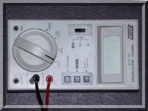
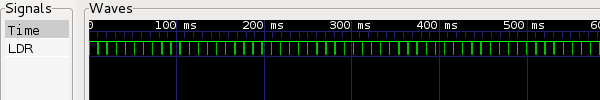

|
 |
 |
| pigpio pigpio C I/F pigpiod pigpiod C I/F Python pigs piscope Misc Examples Download FAQ Site Map | LDR ExampleThe following code shows a method of reading analogue sensors on the digital input only Pi. A Light Dependent Resistor (LDR) varies its resistance according to the incident light intensisty. SETUPThe LDR used is a Cadmium Sulphide device with a 1MOhm dark resistance and 2-4KOhm at 100 lux. The capacitor is a 104 ceramic.One end of the capacitor is connected to Pi ground. One end of the LDR is connected to Pi 3V3. The other ends of the capacitor and LDR are connected to a spare gpio. Here P1-1 is used for 3V3, P1-20 is used for ground, and gpio 18
(P1-12) is used for the gpio. CODE#include <stdio.h>
BUILDcc -o LDR LDR.c -lpigpio -lrt -lpthread
RUNsudo ./LDR >LDR.dat &While the program is running you can capture the waveform using the notification feature built in to pigpio. Issue the following commands on the Pi. pigs no
Change the light falling on the LDR for a few seconds (e.g.
shine a torch on it or shade it with your hands). pigs nc 0The file LDR.vcd will contain the captured waveform, which can be viewed using GTKWave. Overview Reading circa every 10ms One reading, circa 400us The file LDR.dat will contain pairs of timestamps and recharge
time (in us). The following script will convert the
timestamps into seconds.
Gnuplot is a useful tool to graph data. Gnuplot readings 14-24 seconds Gnuplot readings 18-21 seconds |
© 2012-2020 |
e-mail: pigpio @ abyz.me.uk |
Updated: 30/04/2020 |